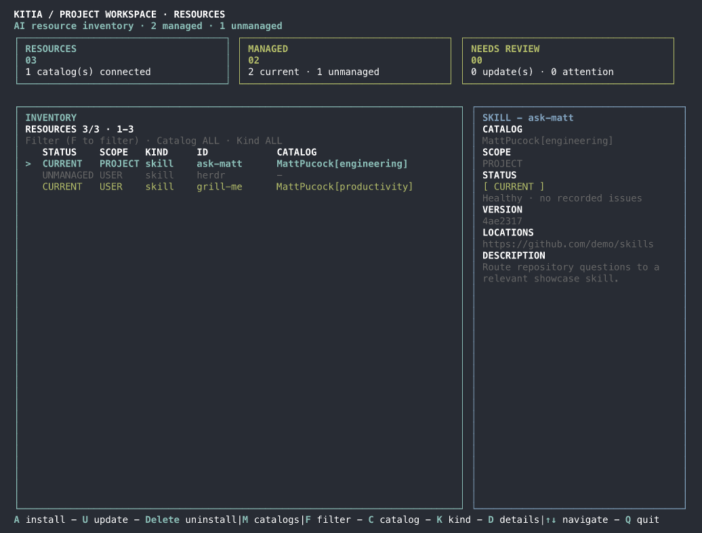
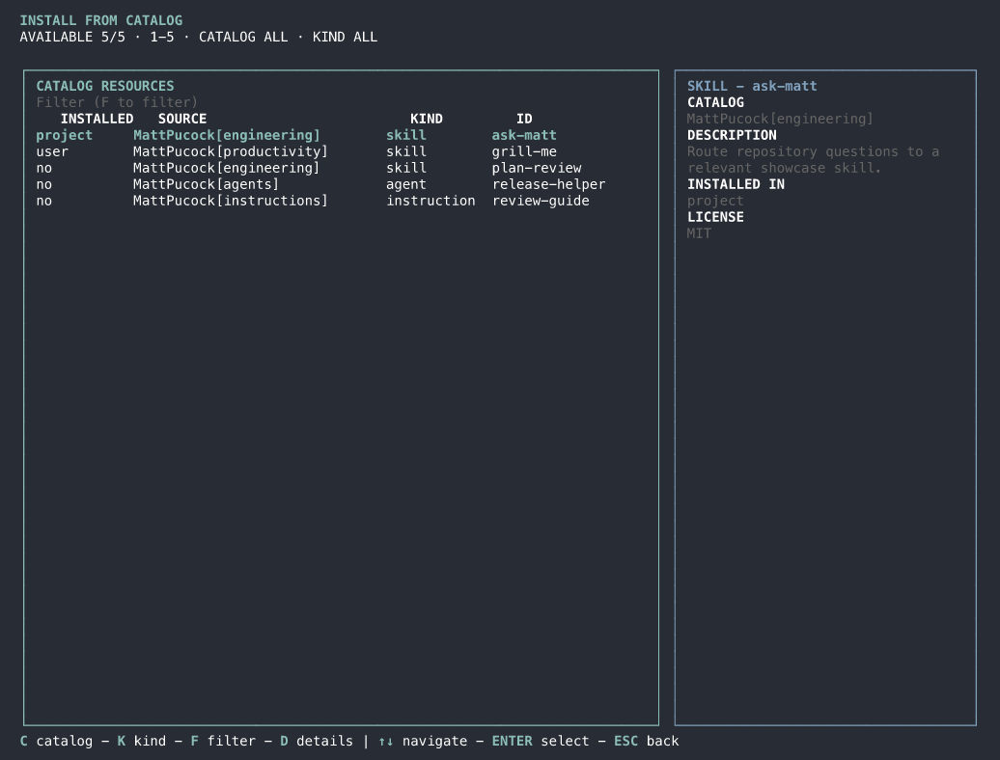

Connect repositories you trust
Add external GitHub catalogs yourself. Use basic discovery or map the paths you want.
kitia catalog add <name> <github-url>An open-source resource manager
Browse external catalogs of skills, agents, and instructions. Choose what belongs in Claude Code or GitHub Copilot—with your sources and files under your control.
REAL KITIA DASHBOARD · DEMO DATA
These views use Kitia's real Ink CLI with isolated, deterministic demo resources—not live user catalog data.


A simpler way to stay deliberate
Kitia helps you discover and manage AI resources without turning your workflow into another hosted service.
Add external GitHub catalogs yourself. Use basic discovery or map the paths you want.
kitia catalog add <name> <github-url>Search the catalog, inspect metadata, and preview resource files before choosing an install.
kitia search "documentation"Preview a plan with dry-run. Kitia tracks managed files and protects untracked or locally modified content.
kitia install skill <id> --dry-runThe Kitia approach
Kitia brings catalog metadata into your local configuration. The resource bodies remain in the repositories that publish them.
Read the CLI contractMade for the terminal
Use Kitia's CLI or interactive dashboard to browse and manage resources across Claude Code and GitHub Copilot.
kitia catalog listSee the catalogs you have configured.
kitia preview skill <id>Review resource files before installation.
kitia install skill <id> --dry-runInspect a lifecycle plan without changing files.
Open source · Your tools · Your choice